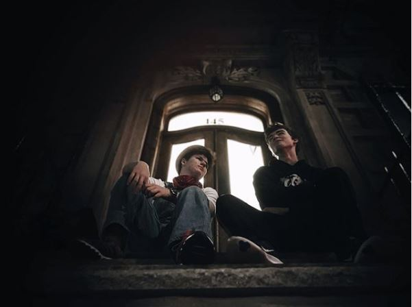

 I now use the stoop as an escape from life and its problems, and use it as a way to help some of my friends relieve some of their worries. My best friend, Hudson, and I have our tradition of having the occasional stoop talk. Stoop talks are reserved for when we feel that the world is crashing down on us can’t carry the weight of it on our own (or really just for gossiping). Everytime he calls me for a stoop talk, I rush downstairs and we grab some root beers from the corner store and talk the night away.